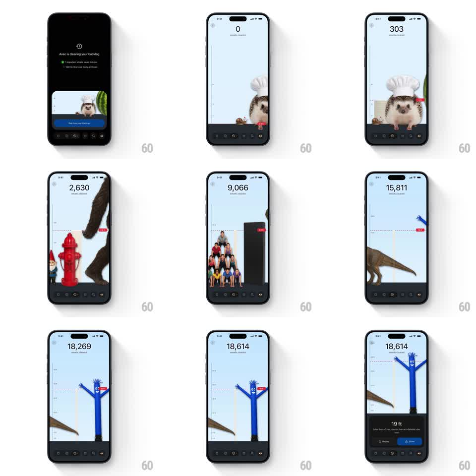

Media
Frame-by-frame

Rebuild this animation 1:1: Avec's inbox-cleared recap - a height chart scrolls upward while a counter ticks from 0 to the total cleared emails, passing playful scale comparisons (hedgehog, fire hydrant, a crowd, a T-rex, an inflatable tube man) until it lands on the final "19 ft" share card.

Rebuild this animation 1:1: Avec's inbox-cleared recap - a height chart scrolls upward while a counter ticks from 0 to the total cleared emails, passing playful scale comparisons (hedgehog, fire hydrant, a crowd, a T-rex, an inflatable tube man) until it lands on the final "19 ft" share card.
## Integration
Integration: stack-agnostic spec - springs given as stiffness/damping, timed motions as duration + curve; map every value to your framework and animation library of choice.
## Scene
Recap screen: a large counter top-center ("18,614 emails cleared"), and a vertical height ruler filling the canvas with tick marks and dashed comparison lines. Quirky illustrated objects stand at their real-world heights. A bottom card closes the sequence with the final height, a joke line, and Replay / Share buttons.
## Motion spec
Pattern: counting ticker with a synced vertical scroll through a measurement timeline.
- The counter ticks up continuously (0 -> 18,614 over ~8s, ease-out so it decelerates near the end).
- The chart scrolls upward 1:1 with the counter's implied height, keeping the current level near mid-screen.
- Each comparison object slides in from the side as its height line passes (translate 40px -> 0, 300ms, ease-out) with its dashed line and label fading in (200ms).
- Motion pauses briefly (~600ms) at each landmark object, then resumes.
- At the final height, scrolling eases to a stop and the bottom card slides up (translate 100% -> 0, 350ms, spring ~280/26).
## Calibration
- The counter and scroll must stay locked - the number is the height.
- Landmarks get funnier as they get taller; pacing should let each one land.
## Reduced motion
No scroll: the chart crossfades between landmark zones (250ms each) as the counter ticks.
## Don't miss
- The ruler ticks and dashed lines scroll with the chart - they are world geometry, not fixed UI.
- The final card's Share button is the only filled (blue) button.